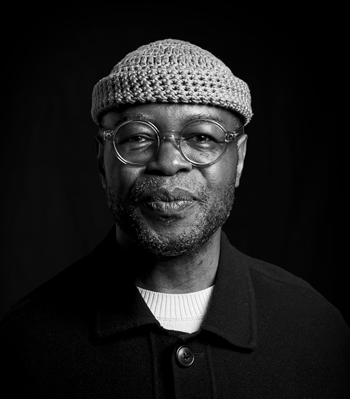
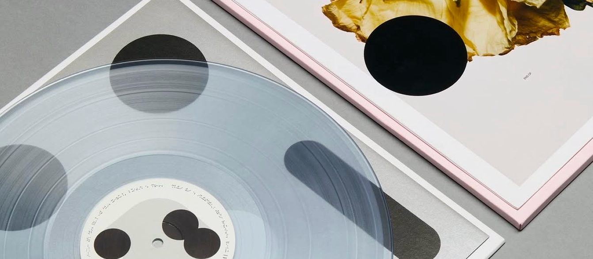

THE DESIGNER
Hugh Miller is a graphic designer, art director and Partner at Pentagram’s London office. Co-founder of the London office of the international design studio BOND, Hugh has extensive experience in branding and visual identity.
While at renowned studio SPIN he worked on projects such as the Whitechapel identity and for campaigns for clients including Nike and MTV. He was later embedded into the brand teams of both Nokia and Microsoft, and most recently was based within Ford’s research-focused innovation unit, Human-Centred Design.
Hugh’s work has earned recognition from D&AD, the Type Directors Club and the International Society of Typographic Designers (ISTD). A design archive enthusiast and typography advocate, he has lectured at Kingston School of Art and the University of Greenwich, and currently serves on the board of the ISTD.


His record sleeve design for SO/LO’s At the End of the World, Plant a Tree received the inaugural Freda Sack Award, which is the ISTD‘s highest honour. Hugh was recently named as one of Creative Boom’s ‘20 Most Inspiring Graphic Designers’ in 2025.